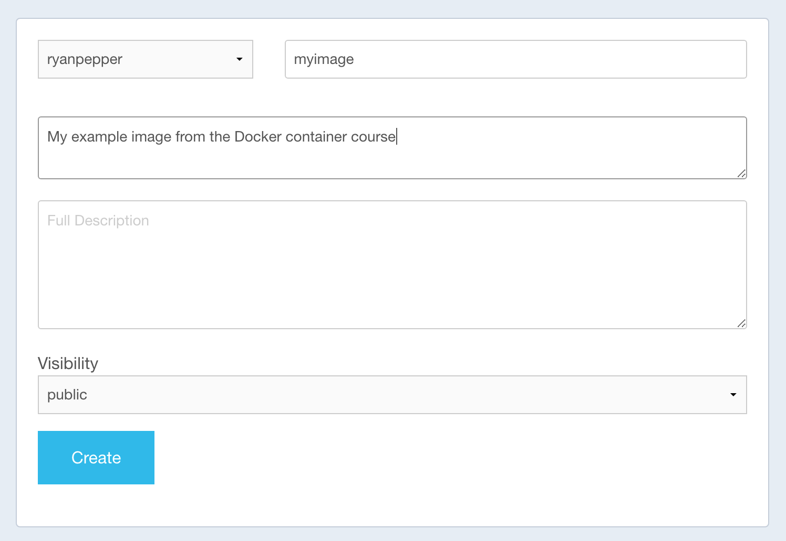

Saving and Sharing Images
Saving the Container
1) We can save the docker container to a file with
docker save myimage > myimage.tarYou can load it again with
docker load myimage.tar2) However, it’s not normally necessary to save containers like this - much easier just to use Docker Hub. Free uploads of containers if public, one private container per account. Create an account on Dockerhub
Make a repository called ‘mycontainer’ on your Dockerhub account.

3) Now, on your computer, run the command:
docker login
You will be prompted for your username and password for Dockerhub. Enter them.
4) We now need to relabel your image. The format for this needs to match your Dockerhub username:
docker tag myimage ryanpepper/myimageNow, we can publish the container online using:
docker push ryanpepper/myimage12) Your container should now be available online. That means, someone else can download it using the docker pull command, and run the same programmes as you in the same way.
13) Just to prove it to you, let’s now delete the containers.
There are lots of commands for deleting containers and images - this is quite confusing!
If you want to remove everything, you can run:
docker system pruneDeletes everything that are not associated with a running container - “dangling”. Add the “-a” flag to remove additionally any stopped containers and all unused images.
If you just want to remove a specific image, you can run
docker imagesThis gives a list of all images you’ve created, including intermediate layers. Copy the image id (the long string of numbers) of the image you want to remove and run:
docker rmi IMAGEIDYou may need to add the flag ‘-f’ if you get an error here:
docker rmi IMAGEID -f
Note: if other images depend on the image you are deleting, they will also be deleted!
Remove all images:
docker images -a
docker rmi $(docker images -a -q)14) Now pull the image we uploaded:
docker pull ryanpepper/myimage